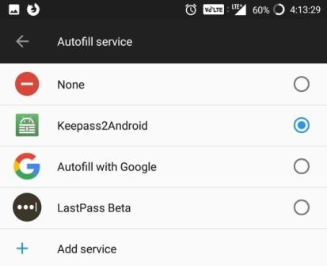
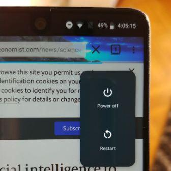
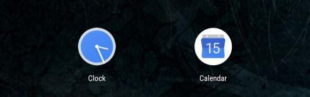
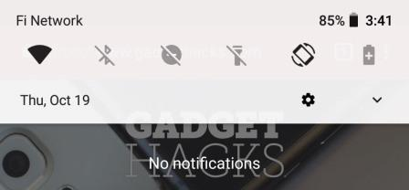
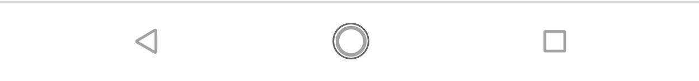

| Android is a Linux-based operating system for mobile devices such as smartphones and tablet computers. It is developed by the Open Handset Alliance led by Google. The Android Open Source Project (AOSP) is led by Google, and is tasked with the maintenance and development of Android. | |
| Enterprise / Developer: | |
| App Store: | Google Play Store |
| Number of applications: | ~ 2.000.000 |
| OS Kernel: | Linux |
| Version: | Android 8.0 Oreo |
| Version release date: | Monday, August 21, 2017 |
Smarter and faster than ever, the yet to be launched version has already started creating ripples. Available for select devices, this version is primarily about speed and efficiency. Not only is the speed expected to double here but pesky background activity is also streamlined to save drain of battery and data power. It also packs in some visual tweaks. With people waiting for it fervently, it looks to be already attracting a loyal crowd.
Unlike previous versions of Android which required workarounds, Android Oreo allows Essential users to autofill their login information into an app. By default, this feature uses passwords from your Google account, but all the major password managers currently support the new API. With this new feature, setting up your new Essential is much easier. Once your password manager is downloaded and unlocked, you can quickly log into your favorite app and access your accounts.
With Android 8.1, Essential has added the full Emoji 5.0 list. With this update comes 70 new emojis along with skin tones for human emojis.
Probably one of the biggest front-end changes in Android 8.0 was the inclusion of picture-in-picture mode. While watching a video or receiving turn-by-turn directions, you could reduce the content to a small floating window by just pressing the home button.
While this feature is still present, Netflix is now among the supported apps in in Essential's Android 8.1 update. Netflix decided that it wouldn't support PiP mode without the absolute latest version of Android. Fortunately, with the latest build, Essential users don't have to worry.

With Android 8.1 Oreo, the power menu has been altered, with one of the more noticeable changes being its reduced size. In addition, it fades in from the right edge of the display (near the top). While it offers little in terms of function, it a welcome cleaner change to the menu.
While this feature is limited to Essential's default launcher, the clock and calendar icons will adjust depending on the time and day. Instead of the default 31st on the calendar app, the icon will now alter based on the actual day of the month, while the clock will show the current time. It a small change, but one that's definitely appreciated.
The Quick Settings menu is also semi-transparent now, allowing users to somewhat see the previous screen. This feature is visible with either background color and offers a small change to the Quick Settings.
The navigation buttons have received a change in their design to help stress the Google Assistant. The back and recent apps buttons have been reduced in size in comparison to the home button. The home button received an additional circle providing more emphasis on the button, which brings up the Google Assistant when long-pressed.
